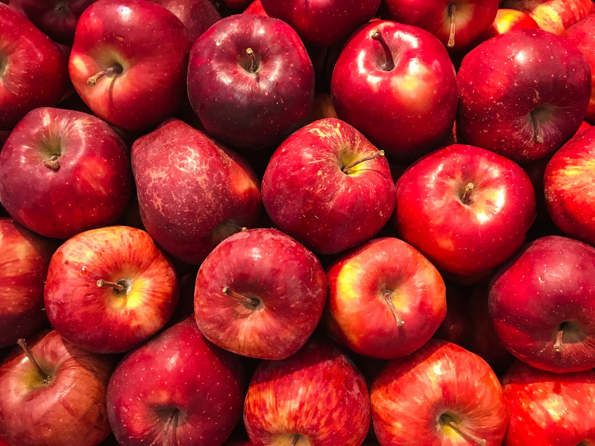

님들 라면드시지마세요 체질이라는게바뀝니다 _blank는 새탭을 열어준다.
그리고 이온음료,탄산음료 는 목막힐때만 먹는거임 과자는 먹어봣짜 힘빠지고 아스크림 힘빠지고 초콜릿 힘빠지고 라면은 체질이바뀜 동물로비유하자면 초식동데요 초식동물처럼
cording h1~h6는 headline+num으로서, 제목을 나타낼때 쓴다(강조+글씨크기조절) p 테그는 공백을 만든다.  src,width같은 것은 속성(attribute)라고한다.(위치상관x) 1. html